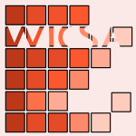

Tag #data analysis
152 papers:
 ASE-2019-TaoTLXQ #api #how #performance #question #runtime
ASE-2019-TaoTLXQ #api #how #performance #question #runtime- How Do API Selections Affect the Runtime Performance of Data Analytics Tasks? (YT, ST, YL, ZX, SQ), pp. 665–668.
 ESEC-FSE-2019-GulzarMMK #big data #testing
ESEC-FSE-2019-GulzarMMK #big data #testing- White-box testing of big data analytics with complex user-defined functions (MAG, SM, MM, MK), pp. 290–301.
- ESEC-FSE-2018-GulzarWK #automation #big data #data-driven #debugging #named #scalability
- BigSift: automated debugging of big data analytics in data-intensive scalable computing (MAG, SW, MK), pp. 863–866.
 FSE-2016-GulzarICK #big data #debugging #interactive #named
FSE-2016-GulzarICK #big data #debugging #interactive #named- BigDebug: interactive debugger for big data analytics in Apache Spark (MAG, MI, TC, MK), pp. 1033–1037.
 QoSA-2015-XuWXZB #as a service #realtime
QoSA-2015-XuWXZB #as a service #realtime- Making Real Time Data Analytics Available as a Service (DX, DW, XX, LZ, LB), pp. 73–82.
 SIGMOD-2015-DokaPTMK #big data #multi #named #workflow
SIGMOD-2015-DokaPTMK #big data #multi #named #workflow- IReS: Intelligent, Multi-Engine Resource Scheduler for Big Data Analytics Workflows (KD, NP, DT, CM, NK), pp. 1451–1456.
- SIGMOD-2015-IdreosPC #overview
- Overview of Data Exploration Techniques (SI, OP, SC), pp. 277–281.
 VLDB-2015-AbdelazizHSKM #framework #named #rdf
VLDB-2015-AbdelazizHSKM #framework #named #rdf- SPARTex: A Vertex-Centric Framework for RDF Data Analytics (IA, RH, SS, PK, NM), pp. 1880–1891.
- VLDB-2015-Balazinska15a #big data #industrial #problem #question
- Big Data Research: Will Industry Solve all the Problems? (MB), pp. 2053–2064.
- VLDB-2015-BhardwajDEKMPS0 #collaboration
- Collaborative Data Analytics with DataHub (APB, AD, AJE, DRK, SM, AGP, HS, EW, RZ), pp. 1916–1927.
- VLDB-2015-DiaoDLLPPP #automation #interactive #named #navigation
- AIDE: An Automatic User Navigation System for Interactive Data Exploration (YD, KD, ZL, WL, OP, KP, LP), pp. 1964–1975.
- VLDB-2015-JoglekarGP
- Smart Drill-Down: A New Data Exploration Operator (MJ, HGM, AGP), pp. 1928–1939.
- VLDB-2015-ShiQMJWRO #pipes and filters #scalability
- Clash of the Titans: MapReduce vs. Spark for Large Scale Data Analytics (JS, YQ, UFM, LJ, CW, BR, FÖ), pp. 2110–2121.
 CHI-2015-TinatiKSLSS #case study #design #framework #multi #platform
CHI-2015-TinatiKSLSS #case study #design #framework #multi #platform- Designing for Citizen Data Analysis: A Cross-Sectional Case Study of a Multi-Domain Citizen Science Platform (RT, MVK, EPBS, MLR, RJS, NS), pp. 4069–4078.
 DHM-EH-2015-LiuCKQF #power management
DHM-EH-2015-LiuCKQF #power management- Balancing Power Consumption and Data Analysis Accuracy Through Adjusting Sampling Rates: Seeking for the Optimal Configuration of Inertial Sensors for Power Wheelchair Users (TL, CC, MK, GQ, JF), pp. 184–192.
- DUXU-UI-2015-Nawrot #difference #gender #question #towards #women
- Gender Differences in Temporal Data Analysis — Toward Women or Men Empowerment? (IN), pp. 232–242.
 KDD-2015-WangCGDKCMS #health #named
KDD-2015-WangCGDKCMS #health #named- Rubik: Knowledge Guided Tensor Factorization and Completion for Health Data Analytics (YW, RC, JG, JCD, ANK, YC, BAM, JS), pp. 1265–1274.
- KDD-2015-YangLJ #big data #optimisation
- Big Data Analytics: Optimization and Randomization (TY, QL, RJ), p. 2327.
 MLDM-2015-AlzahraniAAB
MLDM-2015-AlzahraniAAB - Data Analysis for Courses Registration (NA, RA, NA, GB), pp. 357–367.
 ICSE-v2-2015-MenziesMP
ICSE-v2-2015-MenziesMP - The Art and Science of Analyzing Software Data; Quantitative Methods (TM, LLM, FP), pp. 959–960.
 DATE-2015-SonghoriMLK #automation #framework #hardware #named
DATE-2015-SonghoriMLK #automation #framework #hardware #named- AHEAD: automated framework for hardware accelerated iterative data analysis (EMS, AM, XL, FK), pp. 942–947.
- HPDC-2015-BerrocalBDLC #detection #lightweight #runtime
- Lightweight Silent Data Corruption Detection Based on Runtime Data Analysis for HPC Applications (EB, LABG, SD, ZL, FC), pp. 275–278.
- HPDC-2015-ChengIGB #in the cloud #named
- CAST: Tiering Storage for Data Analytics in the Cloud (YC, MSI, AG, ARB), pp. 45–56.
- HPDC-2015-SuWA #generative #performance
- In-Situ Bitmaps Generation and Efficient Data Analysis based on Bitmaps (YS, YW, GA), pp. 61–72.
- PDP-2015-PedersenREB #biology #data-driven #framework
- Integrating Data-Intensive Computing Systems with Biological Data Analysis Frameworks (EP, IAR, ME, LAB), pp. 733–740.
 STOC-2015-DworkFHPRR #adaptation #statistics
STOC-2015-DworkFHPRR #adaptation #statistics- Preserving Statistical Validity in Adaptive Data Analysis (CD, VF, MH, TP, OR, ALR), pp. 117–126.
 RTA-2015-Kirchner #graph
RTA-2015-Kirchner #graph- Port Graphs, Rules and Strategies for Dynamic Data Analytics — Extended Abstract (HK), pp. 1–4.
- WICSA-2014-HarperD #agile #architecture
- Agile Software Architecture in Advanced Data Analytics (KEH, AD), pp. 243–246.
- SIGMOD-2014-BlanasWBDS #parallel
- Parallel data analysis directly on scientific file formats (SB, KW, SB, BD, AS), pp. 385–396.
- SIGMOD-2014-DimitriadouPD #automation #framework #interactive #named #query
- Explore-by-example: an automatic query steering framework for interactive data exploration (KD, OP, YD), pp. 517–528.
- SIGMOD-2014-GulwaniM #interactive #named #natural language #programming #spreadsheet
- NLyze: interactive programming by natural language for spreadsheet data analysis and manipulation (SG, MM), pp. 803–814.
- SIGMOD-2014-KalininCZ #interactive #semantics #using
- Interactive data exploration using semantic windows (AK, UÇ, SBZ), pp. 505–516.
- SIGMOD-2014-LeFevreSHTPC #big data #design #physics
- Opportunistic physical design for big data analytics (JL, JS, HH, JT, NP, MJC), pp. 851–862.
- VLDB-2014-Markl #big data #declarative #independence
- Breaking the Chains: On Declarative Data Analysis and Data Independence in the Big Data Era (VM), pp. 1730–1733.
- VLDB-2014-ProserpioGM
- Calibrating Data to Sensitivity in Private Data Analysis (DP, SG, FM), pp. 637–648.
- VLDB-2014-SuchanekW #big data #knowledge base
- Knowledge Bases in the Age of Big Data Analytics (FMS, GW), pp. 1713–1714.
 ITiCSE-2014-Marttila-KontioKH #education #student
ITiCSE-2014-Marttila-KontioKH #education #student- Advanced data analytics education for students and companies (MMK, MK, VH), pp. 249–254.
- CHI-2014-ShelleyLMDSS #design #student
- Information-building applications: designing for data exploration and analysis by elementary school students (TS, LL, TM, CD, BLS, AS), pp. 2123–2132.
- DUXU-DI-2014-Bockermann #approach #big data #programming #visual notation
- A Visual Programming Approach to Big Data Analytics (CB), pp. 393–404.
 ICEIS-v1-2014-LettnerZ #framework #industrial #product line
ICEIS-v1-2014-LettnerZ #framework #industrial #product line- A Data Analysis Framework for High-variety Product Lines in the Industrial Manufacturing Domain (CL, MZ), pp. 209–216.
 ICML-c1-2014-ChazalGLM #convergence #diagrams #estimation #persistent
ICML-c1-2014-ChazalGLM #convergence #diagrams #estimation #persistent- Convergence rates for persistence diagram estimation in Topological Data Analysis (FC, MG, CL, BM), pp. 163–171.
 ICPR-2014-FuscoEM #locality #network
ICPR-2014-FuscoEM #locality #network- Bad Data Analysis with Sparse Sensors for Leak Localisation in Water Distribution Networks (FF, BE, SM), pp. 3642–3647.
 KDIR-2014-LinDDG
KDIR-2014-LinDDG - Data Analytics for Power Utility Storm Planning (LL, AD, DD, SSG), pp. 308–314.
 SEKE-2014-JuniorCMS #gpu #repository
SEKE-2014-JuniorCMS #gpu #repository- Exploratory Data Analysis of Software Repositories via GPU Processing (JRDSJ, EC, LM, AS), pp. 495–500.
 SIGIR-2014-NiuLGCG #learning #rank #robust #what
SIGIR-2014-NiuLGCG #learning #rank #robust #what- What makes data robust: a data analysis in learning to rank (SN, YL, JG, XC, XG), pp. 1191–1194.
- SIGIR-2014-ThomasL #composition #distance #information retrieval
- Compositional data analysis (CoDA) approaches to distance in information retrieval (PT, DL), pp. 991–994.
- DATE-2014-0002LLCXY #big data #energy #network #performance
- Energy efficient neural networks for big data analytics (YW, BL, RL, YC, NX, HY), pp. 1–2.
- SIGMOD-2013-AboulnagaB #big data
- Workload management for big data analytics (AA, SB), pp. 929–932.
- SIGMOD-2013-GhazalRHRPCJ #benchmark #big data #industrial #metric #named #standard #towards
- BigBench: towards an industry standard benchmark for big data analytics (AG, TR, MH, FR, MP, AC, HAJ), pp. 1197–1208.
- SIGMOD-2013-HuangB0 #in the cloud #named #optimisation #statistics
- Cumulon: optimizing statistical data analysis in the cloud (BH, SB, JY), pp. 1–12.
- SIGMOD-2013-LapeineHHG #interactive #mobile #query
- Mobile interaction and query optimizationin a protein-ligand data analysis system (ML, KGH, EH, NMG), pp. 1291–1292.
- VLDB-2013-HassanzadehKKKOP #generative
- Next Generation Data Analytics at IBM Research (OH, AK, BK, RK, FÖ, IP), pp. 1174–1175.
- VLDB-2013-KondaKRS #enterprise #feature model #using
- Feature Selection in Enterprise Analytics: A Demonstration using an R-based Data Analytics System (PK, AK, CR, VS), pp. 1306–1309.
- CHI-2013-DruckerFSHs #case study #interface #named
- TouchViz: a case study comparing two interfaces for data analytics on tablets (SMD, DF, RS, JH, MMCS), pp. 2301–2310.
- CHI-2013-HarpsteadMA #education #game studies #learning
- In search of learning: facilitating data analysis in educational games (EH, BAM, VA), pp. 79–88.
- DUXU-PMT-2013-ChynalSS #evaluation #eye tracking #usability #using
- Remote Usability Evaluation Using Eye Tracking Enhanced with Intelligent Data Analysis (PC, JS, JMS), pp. 212–221.
 CAiSE-2013-ChatzikonstantinouKA #framework
CAiSE-2013-ChatzikonstantinouKA #framework- A Goal Driven Framework for Software Project Data Analytics (GC, KK, IMA), pp. 546–561.
- KDD-2013-CannyZ #big data
- Big data analytics with small footprint: squaring the cloud (JC, HZ), pp. 95–103.
- KDD-2013-JohnsonS #privacy
- Privacy-preserving data exploration in genome-wide association studies (AJ, VS), pp. 1079–1087.
- KDD-2013-SunR #big data
- Big data analytics for healthcare (JS, CKR), p. 1525.
- KDD-2013-Wright #learning #optimisation
- Optimization in learning and data analysis (SJW), p. 3.
 KEOD-2013-TodescoBZTG
KEOD-2013-TodescoBZTG - Linked Open Government Data Research Panorama (BT, BB, AZ, JLT, FOG), pp. 278–285.
- MLDM-2013-NikovskiWESSMT #detection
- Smart Meter Data Analysis for Power Theft Detection (DNN, ZW, AE, HS, KS, TM, KT), pp. 379–389.
- RecSys-2013-ChowJKS #difference #recommendation
- Differential data analysis for recommender systems (RC, HJ, BPK, GS), pp. 323–326.
- ICSE-2013-ShangJHAHM #big data #developer
- Assisting developers of big data analytics applications when deploying on hadoop clouds (WS, ZMJ, HH, BA, AEH, PM), pp. 402–411.
- PDP-2013-BachCMK #clustering #grid #multi #power management
- Power Grid Time Series Data Analysis with Pig on a Hadoop Cluster Compared to Multi Core Systems (FB, HKÇ, HM, UGK), pp. 208–212.
- PODS-2012-Mahoney #approximate #scalability
- Approximate computation and implicit regularization for very large-scale data analysis (MWM), pp. 143–154.
- SIGMOD-2012-ChengQR #big data #named
- GLADE: big data analytics made easy (YC, CQ, FR), pp. 697–700.
- SIGMOD-2012-EngleLXZFSS #distributed #memory management #named #performance #using
- Shark: fast data analysis using coarse-grained distributed memory (CE, AL, RX, MZ, MJF, SS, IS), pp. 689–692.
- SIGMOD-2012-MohanTSSC #named #privacy
- GUPT: privacy preserving data analysis made easy (PM, AT, ES, DS, DEC), pp. 349–360.
- VLDB-2012-Dietrich
- Data Analytics Opportunities in a Smarter Planet (BD), p. 1697.
- VLDB-2012-LeeLLLR #framework #twitter
- The Unified Logging Infrastructure for Data Analytics at Twitter (GL, JL, CL, AL, DVR), pp. 1771–1780.
- VLDB-2012-LiuLOSWZ #crowdsourcing #named
- CDAS: A Crowdsourcing Data Analytics System (XL, ML, BCO, YS, SW, MZ), pp. 1040–1051.
- VLDB-2012-Shim #algorithm #big data #pipes and filters
- MapReduce Algorithms for Big Data Analysis (KS), pp. 2016–2017.
- CHI-2012-WillettHA #crowdsourcing #social
- Strategies for crowdsourcing social data analysis (WW, JH, MA), pp. 227–236.
 CSCW-2012-HarboeMIH #collaboration #diagrams
CSCW-2012-HarboeMIH #collaboration #diagrams- Computer support for collaborative data analysis: augmenting paper affinity diagrams (GH, JM, II, EMH), pp. 1179–1182.
- CAiSE-2012-CastanoFM #linked data #open data
- Clouding Services for Linked Data Exploration (SC, AF, SM), pp. 486–501.
 CIKM-2012-TanLN #named
CIKM-2012-TanLN #named- CloST: a hadoop-based storage system for big spatio-temporal data analytics (HT, WL, LMN), pp. 2139–2143.
- ICML-2012-XuYQ #composition #infinity #modelling #multi #parametricity
- Infinite Tucker Decomposition: Nonparametric Bayesian Models for Multiway Data Analysis (ZX, FY, AQ), p. 218.
- KDD-2012-LiuSZFNW #named #visualisation
- AssocExplorer: an association rule visualization system for exploratory data analysis (GL, AS, HZ, MF, SKN, LW), pp. 1536–1539.
- KDD-2012-Ueda #relational
- Bayesian relational data analysis (NU), p. 815.
- KDD-2012-ZhouQM #behaviour #social #social media
- Social media data analysis for revealing collective behaviors (AZ, WQ, HM), p. 1402.
- SIGIR-2012-NunzioS #classification #naive bayes #visual notation
- A visual tool for bayesian data analysis: the impact of smoothing on naive bayes text classifiers (GMDN, AS), p. 1002.
 ECOOP-2012-MorandatHOV #design
ECOOP-2012-MorandatHOV #design- Evaluating the Design of the R Language — Objects and Functions for Data Analysis (FM, BH, LO, JV), pp. 104–131.
 LOPSTR-2012-ChristiansenHLP #declarative #pipes and filters
LOPSTR-2012-ChristiansenHLP #declarative #pipes and filters- A Declarative Pipeline Language for Complex Data Analysis (HC, CTH, OTL, MP), pp. 17–34.
- SIGMOD-2011-OzcanHBBLL #enterprise #roadmap
- Emerging trends in the enterprise data analytics: connecting Hadoop and DB2 warehouse (FÖ, DH, KSB, AB, CJL, YL), pp. 1161–1164.
- VLDB-2011-BeyerEGBEKOS #named #scalability #scripting language #semistructured data
- Jaql: A Scripting Language for Large Scale Semistructured Data Analysis (KSB, VE, RG, AB, MYE, CCK, FÖ, EJS), pp. 1272–1283.
- DUXU-v2-2011-WynnS #low cost #video
- Motivating Change and Reducing Cost with the Discount Video Data Analysis Technique (JW, JDS), pp. 321–328.
- ICEIS-v1-2011-WangWH #implementation
- Research and Implementation of Campus Card Data Analysis System (FW, FW, LH), pp. 515–518.
- CIKM-2011-VirgilioM #calculus #using
- RFID data analysis using tensor calculus for supply chain management (RDV, FM), pp. 1743–1748.
- KDD-2011-Norvig #internet
- Internet scale data analysis (PN), p. 2.
- ICSE-2011-AndersonS #design #framework #implementation
- Design and implementation of a data analytics infrastructure in support of crisis informatics research (KMA, AS), pp. 844–847.
- ICSE-2011-HullettNSH #development #game studies
- Data analytics for game development (KH, NN, ES, JH), pp. 940–943.
 ISSTA-2011-GuoE #automation #persistent #using
ISSTA-2011-GuoE #automation #persistent #using- Using automatic persistent memoization to facilitate data analysis scripting (PJG, DRE), pp. 287–297.
- VLDB-2010-AlexandrovBEHHKMNW #parallel
- Massively Parallel Data Analysis with PACTs on Nephele (AA, DB, SE, MH, FH, OK, VM, EN, DW), pp. 1625–1628.
- VLDB-2010-SrivastavaGGJSSSY #realtime
- Enabling Real Time Data Analysis (DS, LG, RG, TJ, JS, VS, OS, JY), pp. 1–2.
- EDM-2010-KrugerMW10a #data mining #mining
- When Data Exploration and Data Mining meet while Analysing Usage Data of a Course (AK, AM, BW), pp. 305–306.
 ECIR-2010-BierigCGB #evaluation #framework #information retrieval #interactive #modelling
ECIR-2010-BierigCGB #evaluation #framework #information retrieval #interactive #modelling- A Data Analysis and Modelling Framework for the Evaluation of Interactive Information Retrieval (RB, MJC, JG, NJB), pp. 673–674.
- KDIR-2010-Diday
- Extracting Knowledge from Complex Data by Symbolic Data Analysis (ED), pp. 5–6.
- ICSE-2010-SridharanN #re-engineering
- Bayesian methods for data analysis in software engineering (MS, ASN), pp. 477–478.
- SIGMOD-2009-Heer #social
- Voyagers and voyeurs: supporting social data analysis (JH), pp. 971–972.
- SIGMOD-2009-McSherry #framework #platform #privacy #query
- Privacy integrated queries: an extensible platform for privacy-preserving data analysis (FM), pp. 19–30.
- SIGMOD-2009-PavloPRADMS #comparison #scalability
- A comparison of approaches to large-scale data analysis (AP, EP, AR, DJA, DJD, SM, MS), pp. 165–178.
- VLDB-2009-HeerH #social #visualisation
- Data visualization & social data analysis (JH, JMH), pp. 1656–1657.
- HCI-NIMT-2009-HurY #multi #named #sorting
- SimulSort: Multivariate Data Exploration through an Enhanced Sorting Technique (IH, JSY), pp. 684–693.
- ICML-2009-CaiWH #consistency #probability
- Probabilistic dyadic data analysis with local and global consistency (DC, XW, XH), pp. 105–112.
- KDD-2009-BerlingerioPNG #interactive #mining #workflow
- Temporal mining for interactive workflow data analysis (MB, FP, MN, FG), pp. 109–118.
- DATE-2009-YangNV #automation #debugging
- Automated data analysis solutions to silicon debug (YSY, NN, AGV), pp. 982–987.
- ITiCSE-2008-Hoo #self
- Self-organized maps in scientific data analysis (JTSH), p. 372.
- CHI-2008-PererS #case study #statistics #visualisation
- Integrating statistics and visualization: case studies of gaining clarity during exploratory data analysis (AP, BS), pp. 265–274.
- KDD-2008-GraepelH #modelling #online #scalability
- Large scale data analysis and modelling in online services and advertising (TG, RH), p. 2.
- CGO-2008-Griesemer #design #parallel
- Parallelism by design: data analysis with sawzall (RG), p. 3.
- SIGMOD-2007-RundensteinerWXCWYH #interactive #named
- XmdvtoolQ: : quality-aware interactive data exploration (EAR, MOW, ZX, QC, CVW, DY, SH), pp. 1109–1112.
 MSR-2007-MorisakiMMTM #fault #mining
MSR-2007-MorisakiMMTM #fault #mining- Defect Data Analysis Based on Extended Association Rule Mining (SM, AM, TM, HT, KiM), p. 3.
- HIMI-IIE-2007-MaungK #web
- Web Application for Data Analysis by Means of Evidential Dominance (ZAHM, YK), pp. 749–758.
- ICEIS-DISI-2007-MatiasM #interactive
- Revisiting the olap interaction to cope with spatial data and spatial data analysis (RM, JMP), pp. 157–163.
- STOC-2007-NissimRS
- Smooth sensitivity and sampling in private data analysis (KN, SR, AS), pp. 75–84.
- VLDB-2006-RaoDTC
- A Deferred Cleansing Method for RFID Data Analytics (JR, SD, HT, LSC), pp. 175–186.
- ICPR-v1-2006-WeiB #segmentation #statistics #using
- Unsupervised Segmentation Using Gabor Wavelets and Statistical Features in LIDAR Data Analysis (HW, MB), pp. 667–670.
 SAC-2006-LangstonPSSV
SAC-2006-LangstonPSSV - Innovative computational methods for transcriptomic data analysis (MAL, ADP, AMS, JAS, BHV), pp. 190–194.
- SIGMOD-2005-JahangiriS #named
- ProDA: a suite of web-services for progressive data analysis (MJ, CS), pp. 894–896.
- ECDL-2004-HunterFL #generative #interactive #interface
- Next Generation Search Interfaces — Interactive Data Exploration and Hypothesis Formulation (JH, KF, SL), pp. 86–98.
- VLDB-2003-ShiSZ #approach #multi
- A Shrinking-Based Approach for Multi-Dimensional Data Analysis (YS, YS, AZ), pp. 440–451.
 CSMR-2003-GschwindO #aspect-oriented #programming
CSMR-2003-GschwindO #aspect-oriented #programming- Improving Dynamic Data Analysis with Aspect-Oriented Programming (TG, JO), p. 259–?.
- KDD-2003-Piatetsky-ShapiroKR #array
- Capturing best practice for microarray gene expression data analysis (GPS, TK, SR), pp. 407–415.
- SEKE-2003-BeaverS #modelling #quality
- Spatial Data Analysis as a Software Quality Modeling Technique (JMB, GAS), pp. 74–77.
- SIGMOD-2002-RundensteinerWYD #interactive #named #set #visual notation
- XmdvTool: visual interactive data exploration and trend discovery of high-dimensional data sets (EAR, MOW, JY, PRD), p. 631.
- DATE-2002-BontempiK #performance #predict
- A Data Analysis Method for Software Performance Prediction (GB, WK), pp. 971–976.
 IWPC-2001-AndritsosM #reverse engineering
IWPC-2001-AndritsosM #reverse engineering- Reverse Engineering Meets Data Analysis (PA, RJM), pp. 157–166.
- ICEIS-v1-2001-CounsellLSTM #email #optimisation #using
- Optimising the Grouping of Email Users to Servers Using Intelligent Data Analysis (SC, XL, SS, AT, JM), pp. 489–496.
- KDD-2000-BecherBF #automation #data mining #mining #performance
- Automating exploratory data analysis for efficient data mining (JDB, PB, EF), pp. 424–429.
- SAIG-2000-FischerSP #generative #modelling #source code #statistics
- Generating Data Analysis Programs from Statistical Models (BF, JS, TP), pp. 212–229.
- CAiSE-1999-Wietek #modelling #multi #visual notation
- Modelling Multidimensional Data in a Dataflow-Based Visual Data Analysis Environment (FW), pp. 149–163.
- KDD-1999-BarbaraW #approximate #using
- Using Approximations to Scale Exploratory Data Analysis in Datacubes (DB, XW), pp. 382–386.
- CHI-1998-MackayB #multi #named
- DIVA: Exploratory Data Analysis with Multimedia Streams (WEM, MBL), pp. 416–423.
- SIGIR-1998-Greiff #formal method
- A Theory of Term Weighting Based on Exploratory Data Analysis (WRG), pp. 11–19.
- KDD-1997-ChienFMLG #database #image #scalability #using
- Using Artificial Intelligence Planning to Automate Science Data Analysis for Large Image Databases (SAC, FF, HM, EL, RG), pp. 147–150.
- KDD-1997-DerthickKR #interactive #visualisation
- An Interactive Visualization Environment for Data Exploration (MD, JK, SFR), pp. 2–9.
- KDD-1997-SmythW #set
- Anytime Exploratory Data Analysis for Massive Data Sets (PS, DW), pp. 54–60.
- ICSE-1997-GoelS #re-engineering
- Software Engineering Data Analysis Techniques (ALG, MS), pp. 667–668.
- SIGMOD-1996-SelfridgeSW #idea #interactive #named
- IDEA: Interactive Data Exploration and Analysis (PGS, DS, LOW), pp. 24–34.
- KDD-1996-FayyadHS
- KDD for Science Data Analysis: Issues and Examples (UMF, DH, PES), pp. 50–56.
- KDD-1995-CiampiL #approach #design #modelling #network #statistics
- Designing Neural Networks from Statistical Models: A New Approach to Data Exploration (AC, YL), pp. 45–50.
- ICSE-1995-CookW #automation #process
- Automating Process Discovery Through Event-Data Analysis (JEC, ALW), pp. 73–82.
- KDD-1994-BhandariB #on the #statistics
- On the Role of Statistical Significance in Exploratory Data Analysis (ISB, SB), pp. 61–72.
 TRI-Ada-C-1992-SeligPM #ada #realtime
TRI-Ada-C-1992-SeligPM #ada #realtime- Data Analysis and Reporting for Real-Time Ada Systems (TS, DBP, BDM), pp. 469–476.
- ML-1991-BiswasWYK #clustering #concept
- Conceptual Clustering and Exploratory Data Analysis (GB, JBW, QY, GRK), pp. 591–595.
- CHI-1990-SmithBG #generative
- Stereophonic and surface sound generation for exploratory data analysis (SS, RDB, GGG), pp. 125–132.
- ML-1989-Schaffer
- Bacon, Data Analysis and Artificial Intelligence (CS), pp. 174–179.
 DAC-1987-KoukaS #design
DAC-1987-KoukaS #design- An Application of Exploratory Data Analysis Techniques to Floorplan Design (EFMK, GS), pp. 654–658.
- VLDB-1984-JooPM #database #design #logic #named
- Datadict — A Data Analysis and Logical Database Design Tool (TTJ, TKP, GAM), pp. 71–77.
- DAC-1978-Gianfagna #approach #testing
- A unified approach to test data analysis (MAG), pp. 117–124.